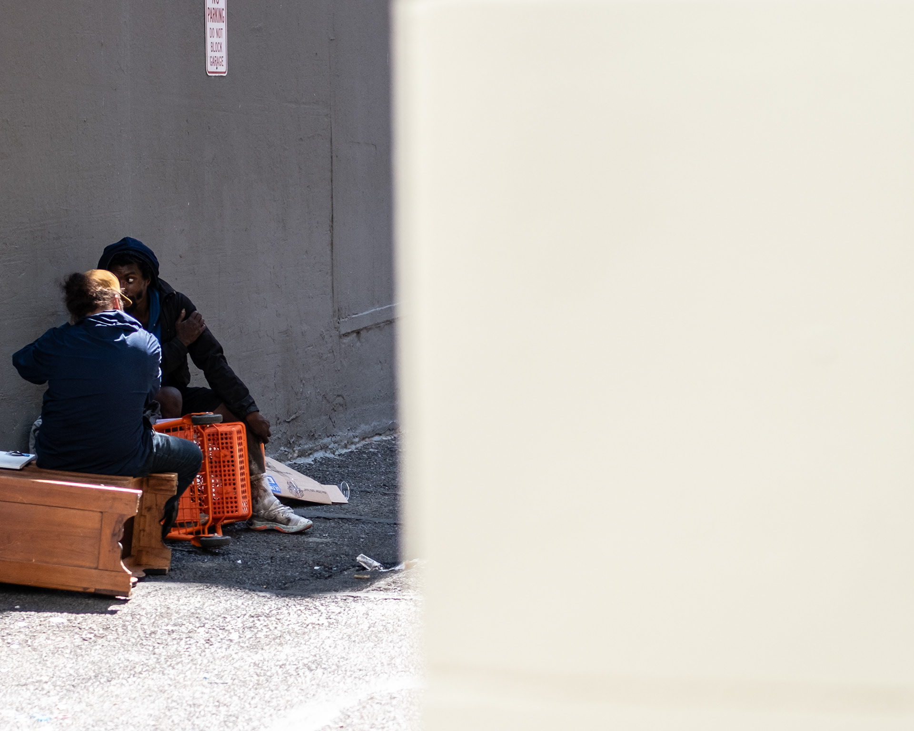
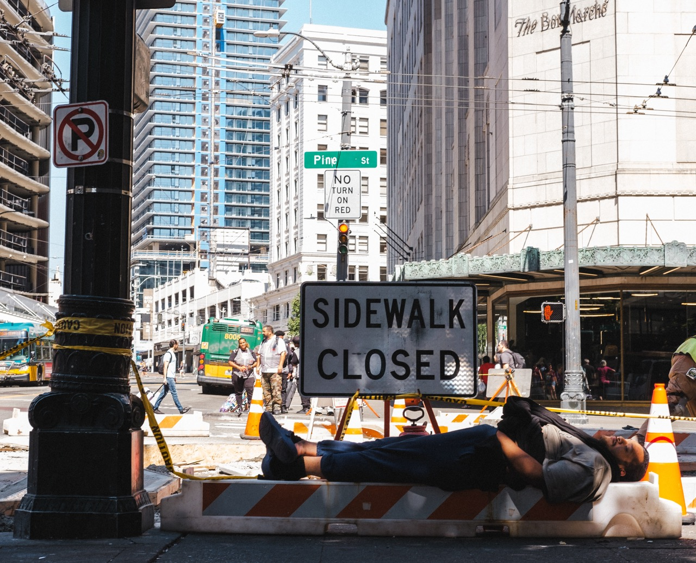

Taking photos in cities has increased my appretiation for the individual. I think I understood that everyone around me had complex lives but something changed when I started photographing people. I saw their emotions in person, and for a moment experienced their lives.

When discussing homelessness, individuality matters the most. Each individual that ends up homeless has a complex story behind their suffering and their end result. It becomes natural to walk past a person underneath a clump of blankets and assume they are just apart of a bigger issue.
Many take a statistical approach on one side politically, and a abrassive on the other. "Provide mass housing for them," the left says, the provided housing then gets destroyed. "They got themselves into the situation, its a natural consequence", the right says, regardless they are still suffering and dying.
I believe that both these ideas fall short of what I personally believe to be the main problem that comes with homelessness: failure to understand people on personal level. Homelessness itself is an isolation from ones problems, people, and in turn life. No one wants to be homeless, but often times it becomes easier then returning back to normal life.
People are creatures of habit, if we develop positive ones, those will be reinforced, if we develop negative ones, they will be reinforced. Alongside that people are good at surviving no matter the conditions, even if they are suffering they will find a way to continue living. Because of these two factors homeless individuals are trapped between the comfort of unchanging and the steps it takes to come back to society.